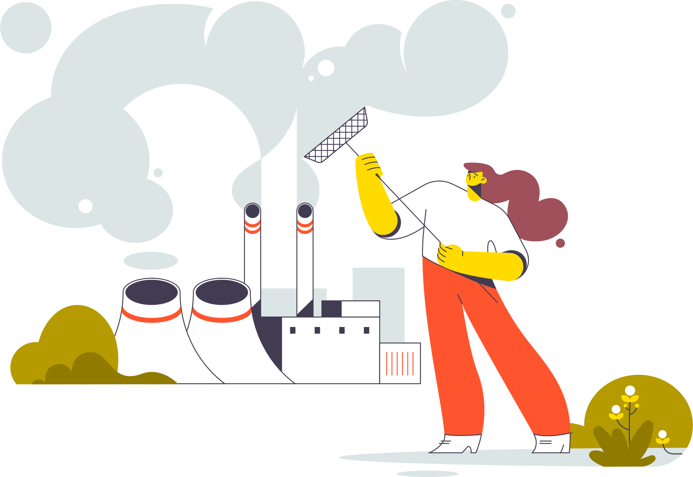

Simulación de generación de energía mediante la combustión de residuos sólidos

El constante desarrollo tecnológico, económico e industrial a nivel mundial, han aumentado la dependencia a la energía eléctrica, ya que en un mundo tan globalizado e interconectado como el actual, no se concibe un desarrollo sin este recurso.
Colombia es considerado uno de los países latinoamericanos que cuenta con una matriz energética confiable y limpia, sin embargo la confiabilidad de generación baja notablemente en tiempos de sequía por la disminución de los niveles de los embalses, y comienza a depender de la generación térmica, lo cual también afecta los pecios de generación y por ende, el precio del KWh cobrada a los usuarios finales.
Presentaremos una alternativa viable a los combustibles tradicionales, mediante el aprovechamiento de los RSU, combustible que se obtiene a partir de la compactación y trituración de residuos y desechos inflamables que poseen un coeficiente calorífico capaz de ser utilizado para la generación de electricidad.
Buscamos simular la generación de energía eléctrica a partir de la combustión de residuos sólidos, mediante el software SAM con el fin de disminuir la dependencia a los combustibles fósiles.
Los combustibles derivados de residuos sólidos son aquellos provenientes de desechos que podemos encontrar tanto en el sector industrial, en los hogares y en vertederos de basuras, desechos tales como plástico, madera, materiales biodegradables y demás materiales que al compactar y separar puedan aportar su coeficiente calórico en forma de combustible. Este tipo de combustible nace como solución de dos problemas, los cuales son el mal manejo de residuos que conlleva al constante rebosamiento de vertederos de basura y como alternativa a las fuentes tradicionales de combustible tales como el combustible líquido y el carbón, que tienen fuerte impacto medioambiental.
El proceso de combustión mediante residuos consiste en la selección de materiales aptos por características caloríficas, para posteriormente triturarlos y mezclarlos a temperaturas que alcanzan los 850°C, alcanzada esta temperatura, los residuos son trasladados a cámaras de combustión que en compañía de oxígeno generarán un flujo de vapor capaz de poner en marcha el sistema de generación eléctrico.
Generación de energía eléctrica durante cada mes del año
Los datos de encabezado son información en el archivo meteorológico que describe la ubicación y el tipo de datos en el archivo. SAM utiliza la zona horaria, la elevación, la latitud y la longitud para calcular la posición del sol durante las simulaciones. No utiliza la ciudad, el estado, el país ni otra información descriptiva.
Las entradas de la página Materia prima definen el recurso de biomasa de la ubicación que especifique en la página Condiciones ambientales y el contenido físico del recurso.
Las entradas de la página Especificaciones de la planta definen las principales operaciones unitarias que componen una planta de energía de biomasa: procesamiento de biomasa, sistema de combustión y caldera, y turbina de vapor.